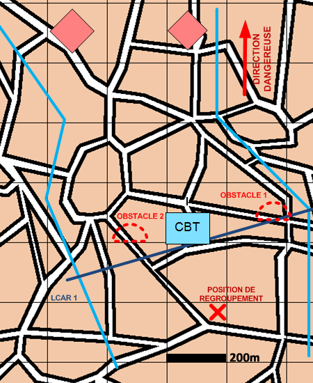

NIVEAU :Automate
ARME :Melee
MISSION :Donner Coup Arret
Objectif principal
Modalités d'exécution
-
Installation du dispositif :
- L'échelon d'éclairage va éclairer au-delà de la ligne de coup d'arrêt (LCAR) (jusqu'aux positions de reconnaissance si précisées, jusqu'au bout du fuseau sinon) ;
- Le PC se poste dans la zone de regroupement ;
- Le GEN valorise la LCAR (construction d'obstacles et travaux de protection) ;
- Les autres unités de mêlée se postent sur la LCAR et défendent les points définis par le croisement des axes et de la LCAR (ou sur les positions de défenses passées en paramètres si précisées);
- Les appuis feu appuient la mêlée.
-
Au contact de l'ENI, l'échelon d'éclairage décroche vers l'arrière du dispositif et rejoignent le PC.
-
Lorsque le rapport de force devient défavorable, la mêlée et les appuis décrochent vers la zone de regroupement.
Schéma de modélisation

Paramètres obligatoires
Fuseau : Zone de responsabilité.
Direction Dangereuse : Orientation privilégiée des capteurs.
Ligne de Coup D'Arrêt [LCAR] : Ligne à partir de laquelle les unités vont effectuer le coup d'arret.
Position de regroupement : Position à rejoindre après le coup d'arret.
Paramètres optionnels
Nombre d'echelons (1 par défaut)
Obstacles: Obstacles à construire.
Valoriser obstacles: Indique si on valorise les obstacles après construction.